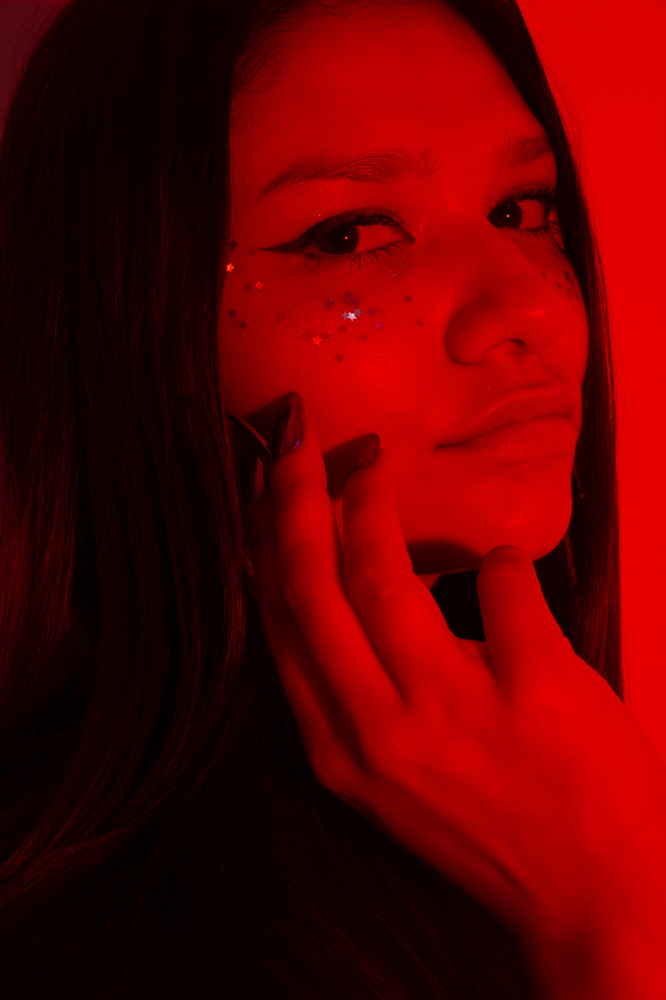

Soy Brisa Farias, cantante y coach vocal con más de una década de dedicación al arte de la voz. Formada en la prestigiosa escuela de Valeria Lynch (VLIMA), he perfeccionado mi técnica para dominar géneros que van desde el musical theatre hasta el pop y el rock.
Mi carrera se divide entre el escenario y la educación. Como instructora, he guiado a cientos de alumnos a encontrar su propia voz, mientras que como artista, busco conectar emocionalmente con cada audiencia a través de la interpretación y la autenticidad.
Actualmente, me encuentro explorando nuevos proyectos musicales, buscando colaboraciones que desafíen mi arte y lleven mi música a nuevos escenarios.
Algunas de mis interpretaciones y trabajos recientes.
Para contrataciones, clases o colaboraciones:
fariasbrisa10@gmail.com